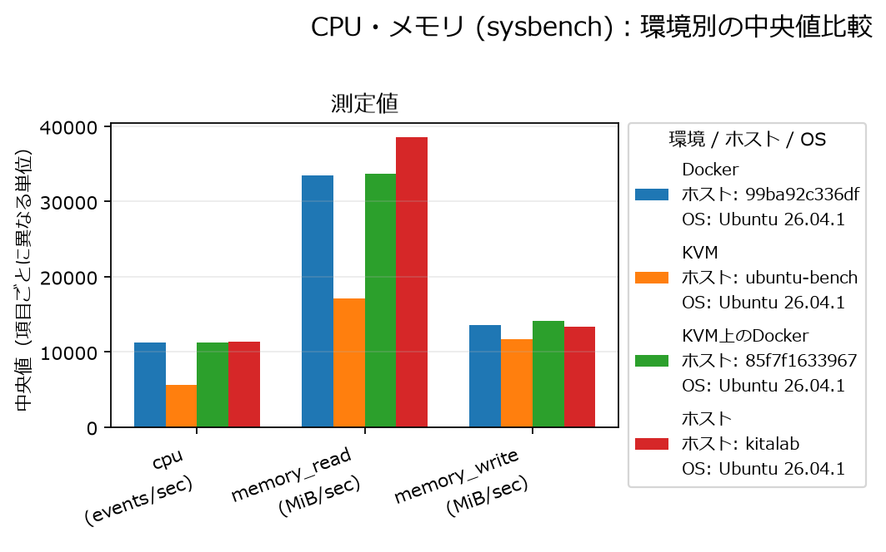
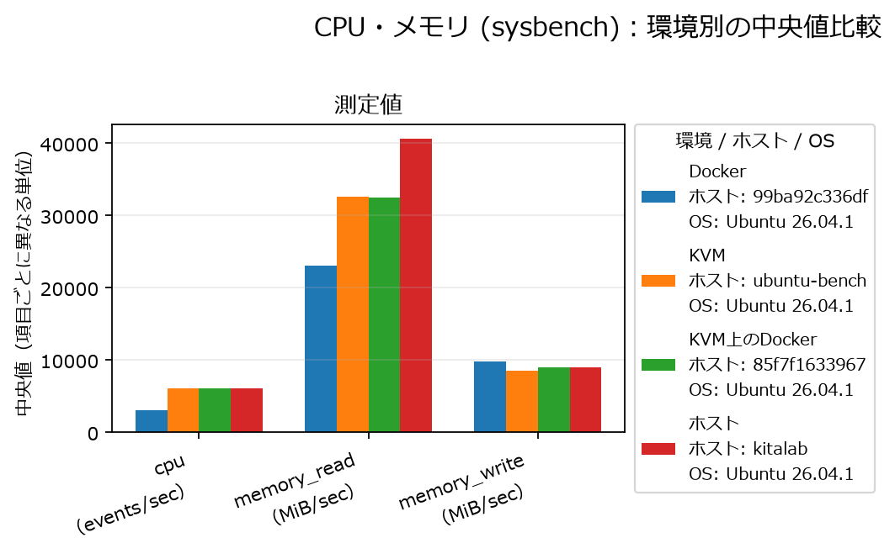
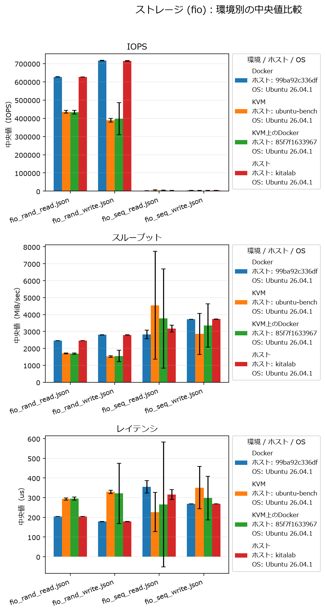
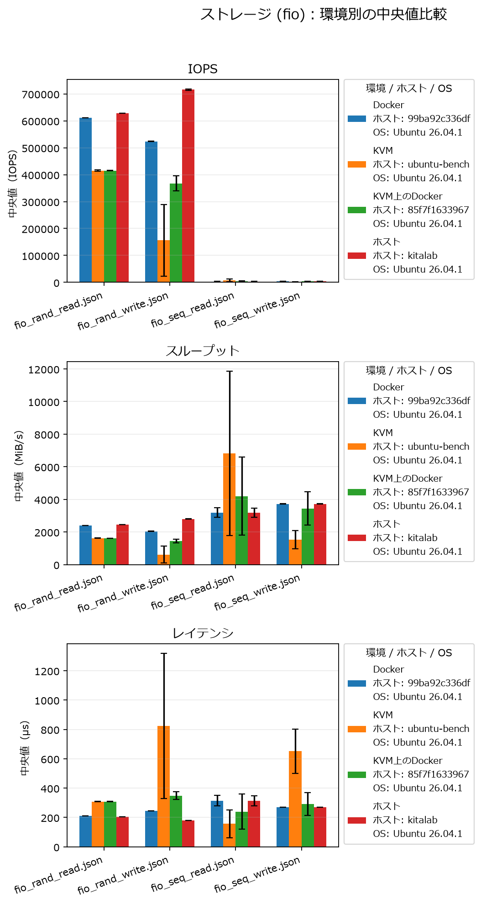
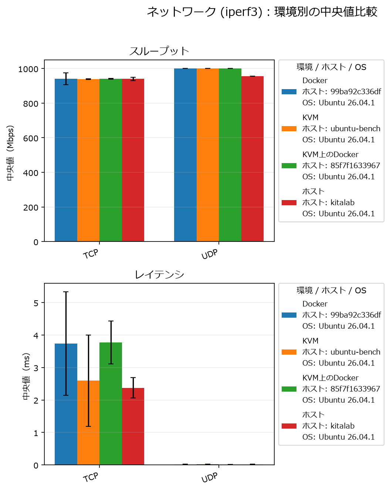
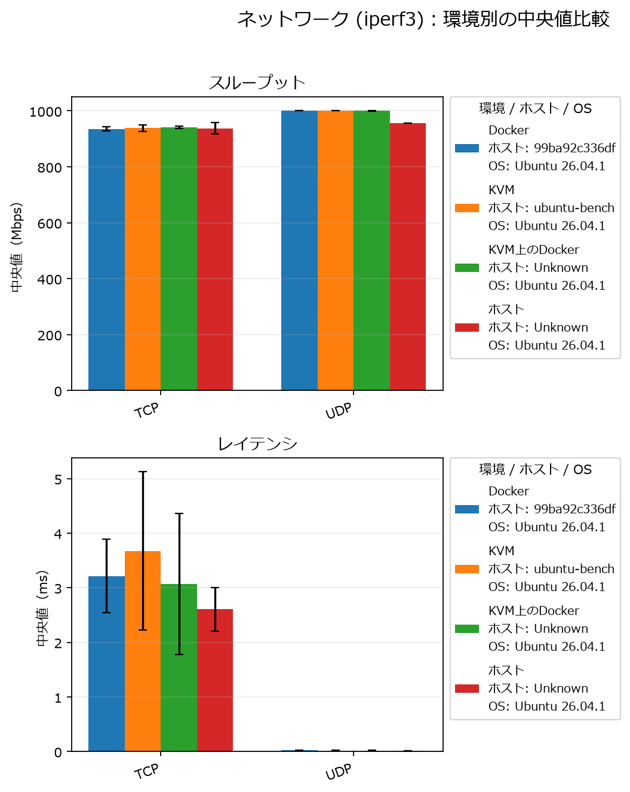

Pコア・Eコア環境のベンチマーク比較
Docker・KVM・KVM上のDockerにおけるCPU、メモリ、ストレージ、ネットワーク性能
研究テーマ
サーバー仮想化技術とコンテナ技術の性能比較および最適化に関する研究
今回の作業
Intel Core Ultra 7 265のPコアおよびEコアを対象に、ホスト、Docker、KVM、KVM内のDockerでベンチマークを実施しました。CPU・メモリはSysBench、ストレージはfio、ネットワークはiperf3で測定し、環境ごとの中央値を比較しました。
図はEコア環境（2026年11月12日）とPコア環境（2026年10月29日）の測定結果です。凡例にある各環境のホスト名とOS情報も、元のグラフの表記を掲載しています。
測定結果
CPU・メモリ（SysBench）
今回のCPU測定では、一般に同じコア数・スレッド数・負荷条件ならPコアの演算性能が高いと予想されますが、観測値はその予想と一致しませんでした。ホスト同士の比較ではEコア側が約1.86倍となっています。また、Pコア側ではDockerのCPU値がホストの約6,060に対して約3,084と、およそ半分まで低下しています。
メモリREADにも大きな差が見られます。Eコア側のKVMは約17,000 MiB/secで、他環境の約33,000～38,000 MiB/secを大きく下回りました。CPU値が低下した環境とメモリREADが低下した環境が一部重なっており、Eコア側KVMでは両方ともおよそ半分という傾向です。


ストレージ（fio）
fioではランダム／シーケンシャルの読み書きについて、IOPS、スループット、レイテンシを比較しました。環境によって値やばらつきが異なり、とくに一部のKVM系測定ではエラーバーが大きくなっています。中央値だけでなく、測定のばらつきも含めて確認する必要があります。


ネットワーク（iperf3）
iperf3のTCP・UDPスループットは各環境でおおむね近い値でした。一方、TCPレイテンシには環境間の差とばらつきがありました。今回の結果では、CPUやメモリほど明瞭なスループット低下は確認されていません。


考察と今後の確認
今回の測定では、コア種別に対する一般的な予想と異なるCPU性能、および特定環境でのCPU・メモリ性能の低下が確認されました。ただし、PコアとEコアの測定日は異なるため、現段階ではコア種別だけが差の原因とは断定できません。CPUの割り当て、実行スレッド数、仮想CPU数、メモリ設定、バックグラウンド負荷などの条件をそろえて再測定し、設定と実行条件を記録して原因を切り分けます。
- 各環境のCPUコア／スレッド割り当てとCPUアフィニティを確認する
- KVMの仮想CPU数・メモリ設定と、DockerのCPU・メモリ制限を確認する
- 同じ負荷条件・測定回数で再測定し、中央値とばらつきを比較する
- メモリREAD低下がCPU性能低下と連動するか、条件を変えて調べる
参考文献
今回の作業で新たに参照した文献はありません。